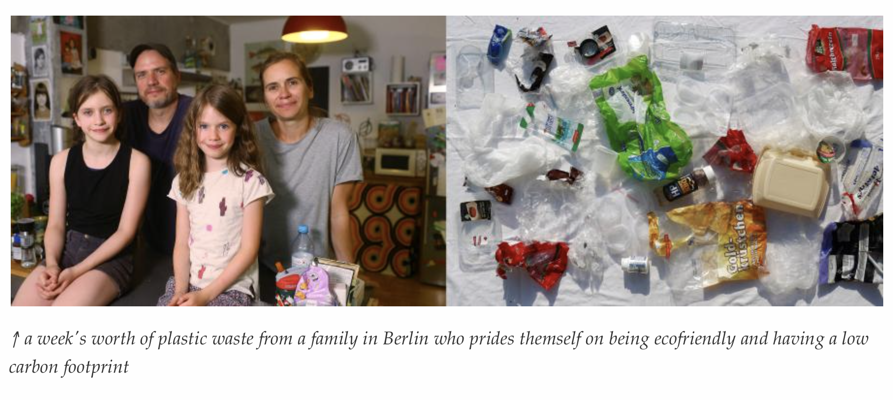
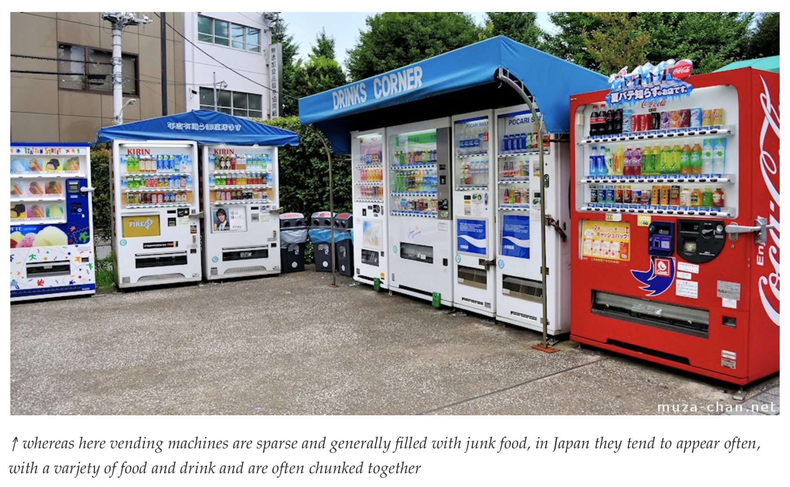
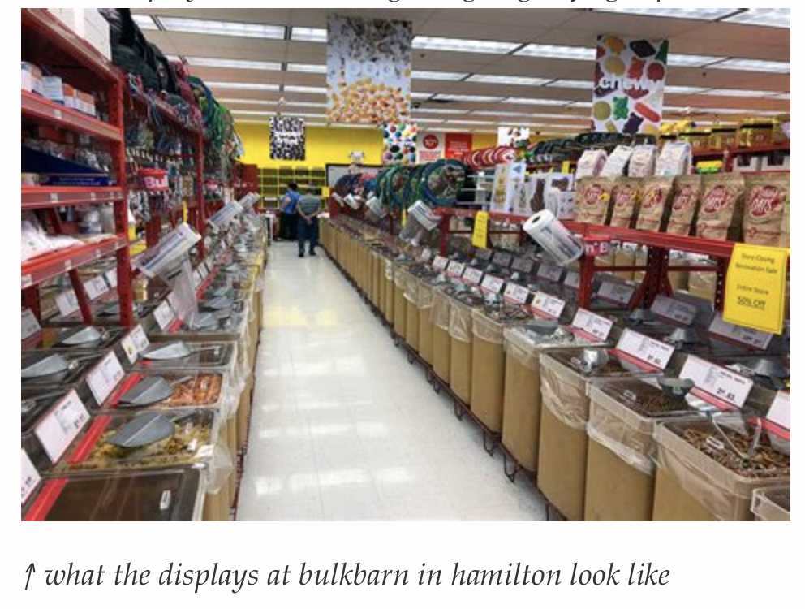
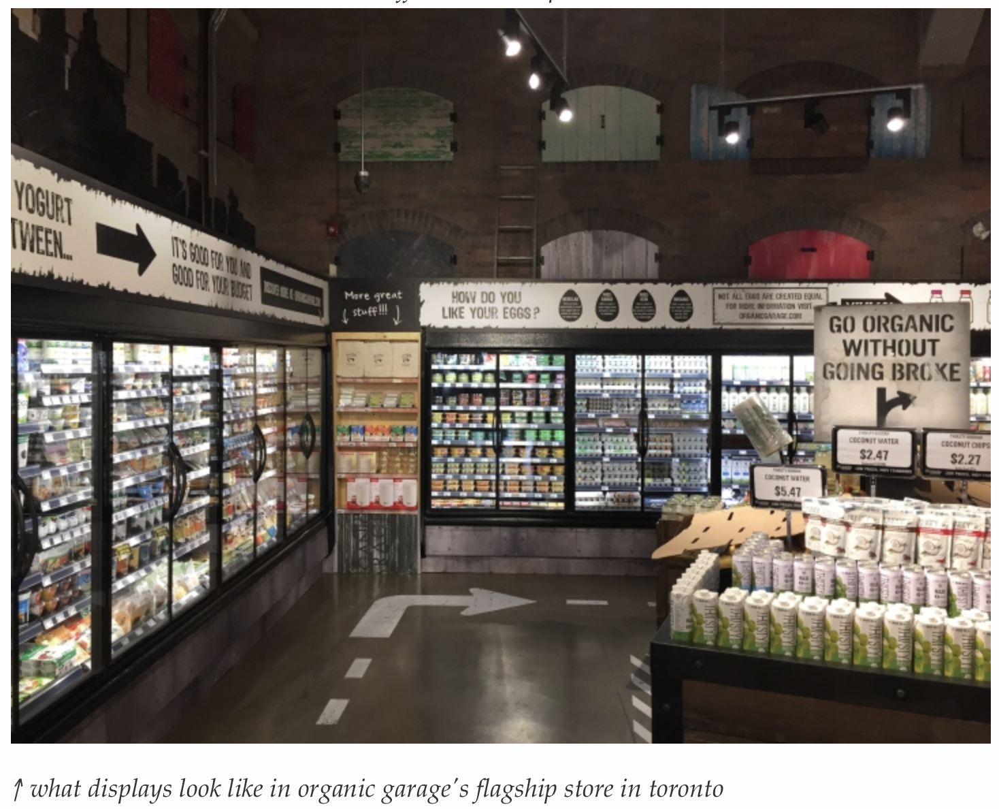
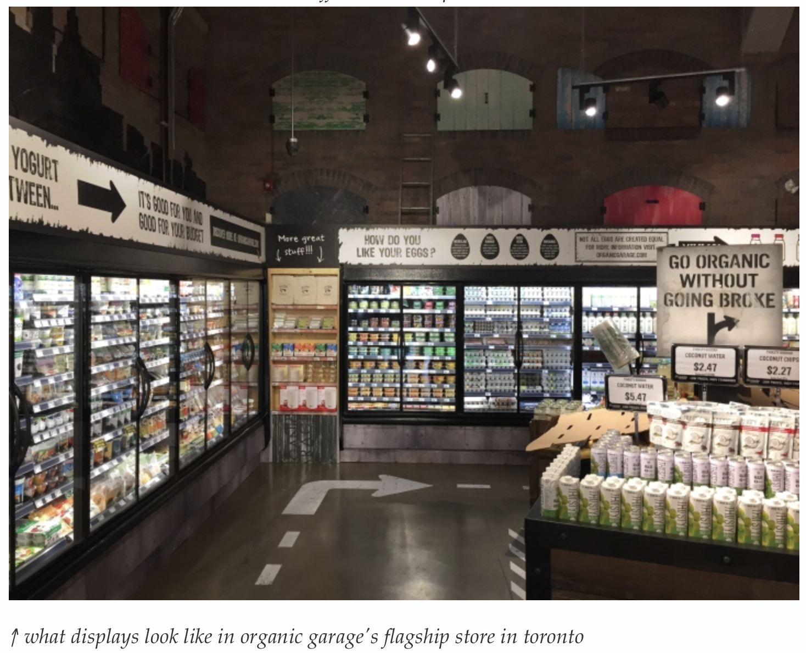
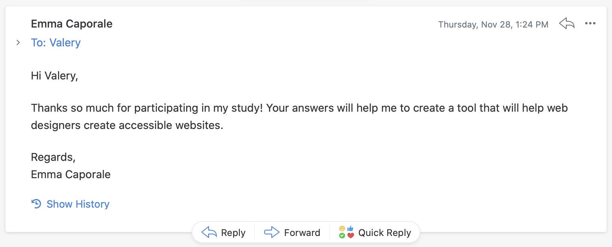

Mercä Process Work
This project was a group effort. Here's what Valery contributed.
Table of Contents
The Break Down
- A boat load of research on vending machines, zero-waste movements, grocery stores, and sustainability
- The generation of the initial concept (of which has grown with the project)
- Subway poster marketing material
- Several initial brand style tiles
- Machine prototype concepts: sketches and inspiration
- Finalized brand style guide.
- The project presentation website (if it wasn't already obvious 😉 )
Mercä Research
The overarching cultural narrative seems to be one of individual choice. A perspective that stems from Enlightenment thinking, it puts the blame on the shopper and tells them that they need to change their ways to make the world more sustainable. Yet, this flawed way of thinking fails to realize that there aren't any convientient options currently in the market to enable shoppers to change. Moreover, most ‘sustainable’ options on the market are out of the way and problematically packaged.
Through my research I found that most grocery stores and delivery services like Skip The Dishes, Miss Fresh, Farm Boy, Whole Foods, etc. tend to be really heavy on packaging. I found that the onlyreal way that you can get your groceries fresh on an accessible scale were bulk food stores like Bulk Bark; which are still fairly spread out. To me it became quite evident that convienience is a major pain point in the market for sustainable products and devices. While sustainable options are great, when shoppers have to go far out of their way to access them for a higher price they tend to take the more convienient option instead. So I though to myself, what is the laziest, most convienient way to get food? The answer: vending machines. I ended up doing a fairly deep dive into vending machines, how their used in North America and Japan, and how their underlying technology could be adapted into a smart 'farmers market'.
This gets to the crux of the idea for Mercä. It is a sustainable vending machine that can essentially be placed anywhere. It avoids problematic plastic packaging by using a combination of cameras and weight sensors to dispense product into customers' reusable containers without spilling everywhere. Oh and did I mention, the food is also yummy. It falls under two of the assigned categories: retail & sustainability.
Research Materials
Why Japan has so many vending machines, A piece by Vox Media as part of their Borders series that goes indepth into how the Japanese use vending machines (spoiler alert: they use them for much more than just chips and soda).
How Amazon Go (probably) makes “just walk out” groceries a reality, An article on Ars Technica on how the Amazon Go cashierless grocery store probably works. The issue with this solution is that it relies on users having an Amazon account as well as a payment system attached to their phone prior to shopping.
Unboxed Market: Toronto's first zero waste market, A grocery store in Toronto that has no packaging, it's BYOC! Could be useful to take pointers on how to make zero waste go from a local scale to a mass produced scale.
Blog TO: Toronto is getting a zero waste market, an article about the opening of the grocery store mentioned above. Also links to other sustainable stores in the final paragraph.
Why buying plastic-free groceries is so hard, A deep dive into why it is so hard for consumers in Canada to buy plastic-free groceries by CBC Marketplace. They literally found individually packaged peppers for sale. Seriously, peppers already have packaging built in, it's called their skin!
Does your reusable coffee cup make a difference? A radio piece by the BBC that looks into the Starbucks reusable cup program and tries to find out if it acutally makes a real difference.
We Can't Do It Ourselves, an article on Low→Tech magazine about the limits of individual choice in leading a sustainable life:
"The fact that most people do eat meat, do drive cars, and are connected to the electric grid is not simply an isolated matter of choice. People are often locked into unsustainable lifestyles."
It looks at how it isn't just people who are lazy being the cause of unsustainablity, but it is also because the majority of the population is trapped in a hodgepodge of unsustainable systems. It goes on to advocate for a systematic approach that would create a sustainable 'new normal'.
Marketing Materials
No smart device is complete without some good marketing. Below are some ads that are meant to get our target users to look into and (hopefully) use our vending machines. We decided to create ads in both print and digital mediums because, while the vending machine itself is a smart device, people will be interacting with it in the analog world.
Subway Ads
Valery made the posters for the marketing material. She wanted to make a poster that captured the cheeky playfulness of the brand's style while still keeping the important zero-waste message intact.


Machine Prototype
With the machine prototypes that I created I tried to make designs that were familiar to our target user, but wouldn't be conflated with regular vending machines. I felt that if the device looked like a plain old vending machine it would be associated too much with junk food, and since were selling fresh food that would be undesirable.
The Prototype Skethes
Valery made the posters for the marketing material. She wanted to make a poster that captured the cheeky playfulness of the brand's style while still keeping the important zero-waste message intact.
The Prototype Inspiration
Valery made the posters for the marketing material. She wanted to make a poster that captured the cheeky playfulness of the brand's style while still keeping the important zero-waste message intact.
Branding
Along with creating the finalized styling manual, Valery also did several conceptual brand style tiles for the project. She wanted to use playful, welcoming type and colours to make the machine feel more alive and less like a cold dead Imperial Star Destroyer slapped into a corner of a Walmart.
The Style Tiles
More Visual Research
   

User Flows
Grocery Store Flow A
Generic Georgia needs lentils → she goes to her local organic grocer → she wanders around the store, but can't find where they are → she caves and asks an employee to show her where they are → the employee she asks is unsure, the employee goes to ask another employee → Georgia waits → the employee returns with another employee who knows where the product is → they go and find the lentils → all of the lentils are overpackaged → being environmentally conscious, Georgia grabs the lentils with the least amount of packaging, the most expensive one → Georgia checks out, gets a long printed reciept for the single item → Georgia returns home → Georgia opens the packaging and pours the lentils into a reusable jar → Georgia throws out the packaging
Mercä Flow A
Generic Georgia needs lentils → She goes to the self-serve store → She finds the machine that sells dry bulk clearly labelled → she locates the lentils in the interface and chooses it → the machine prompts her and she puts her reusable jar, which she brought from home, into the dispenser → the machine charges her account, dispenses lentils into the jar, and sends a reciept to her email
Grocery Store Flow B
Janice needs milk → she goes to convienience store to grab milk → She locates the milk quickly because the store is small and well organized → the brand she normally goes for is marked up $4 from the grocery store → Janice is on a tight budget, so she goes for the cheaper brand in a plastic bottle → Janice checks out and returns home
Mercä Flow B
Janice needs milk → she goes to the self-serve store → She locates the machine that sells dairy → she locates the whole milk in the interface and chooses it → the machine prompts her and she puts her reusable jug, which she brought from home, into the dispenser → the machine charges her account, dispenses lentils into the jar, and sends a reciept to her email
Lofi App Wireframes
Or click here to see it full screen.Getting Inspiration from the Best
Since I wasn't gonna be in class for the presentation—instead being on a train towards Ottawa—I wanted to make sure that the presentation would still be good in my absence. So I decided to see how Steve Jobs did the presentation for the original iPhone. To be the best you gotta learn from the best!
Mercä Slideshow
I created all of the slideshow presentation except for the copy about the branding guidelines (that was Fel). Click here to see it full screen.
Extra Curricular Activities
Took a half hour and participated in a research study about accessible web development. ☺
Mercä, © 2019. All rights reserved.
A project by Arsheen Virani, Felicite Keng, Grace Lim, & Valery Marier for YSDN 3006